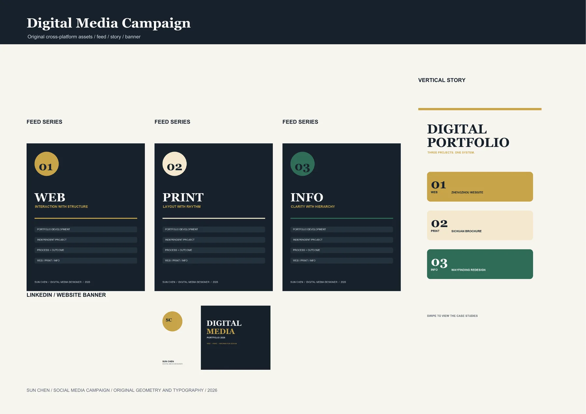

Supplementary Extension / Sun Chen
Digital Media Extensions
Campaign, interface and motion outputs built from the portfolio's web, print and information system.

Social campaign / feed, story and banner

Mobile UI concept / navigation, states and micro-interactions
10-second motion teaser
720 x 720 / 10 seconds / continuous loop
Outcome
One system, multiple formats
The portfolio identity moves from screen and print into campaign, interface and motion outputs.
Reflection
Next step
A shared visual language can stretch across media. The next step is to test a public, interactive version with real users.